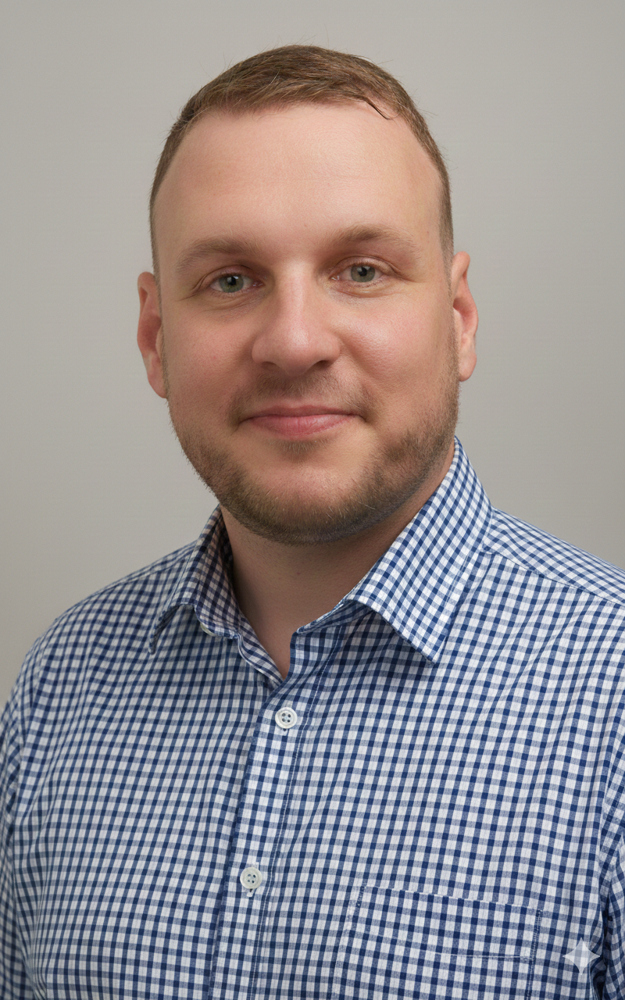

Optimization & Automation Specialist
Wierzę, że technologia powinna służyć ludziom, a nie na odwrót. Łączę 10-letnie doświadczenie operacyjne z branży produkcyjnej z nowoczesnym warsztatem automatyzacji.
Jako freelancer pomagam firmom porządkować chaos w danych i dokumentacji. Nie buduję skomplikowanych systemów, których nikt nie rozumie – tworzę proste, logiczne i estetyczne narzędzia, które realnie odciążają zespoły.
Jeśli chcesz usprawnić raporty, zautomatyzować powtarzalne zadania albo uporządkować dokumentację operacyjną – odezwij się.
NAPISZ DO MNIEMoje podejście wywodzi się z hali produkcyjnej, gdzie liczy się każda sekunda i każdy ruch.
Koordynator CI // Dan Cake Polonia (2025 - Obecnie)
Lider projektów optymalizacyjnych i cyfryzacji danych operacyjnych.
Team Leader // Gallagher’s Bakery (Irlandia)
Zarządzanie 15-osobowym zespołem w dynamicznym środowisku produkcyjnym.
Operator Maszyn Produkcyjnych
Fundament mojej wiedzy o tym, jak powstają błędy i gdzie szukać usprawnień.